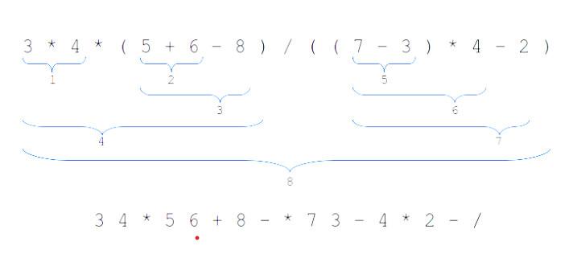

Stacks and Queues
In this chapter, we are going to discuss two very useful data structures i.e. stacks and queues, both of which are applied in various places in Computer Science.
1 Stacks
Stacks as an abstract data type, are based on stacks in real life. For our discussions, it might prove helpful if you visualize a stack of books, or plates, or cards.A stack is a lection of homogeneous elements in which the addition and deletion of elements only occurs at one end i.e. the top of the stack. For example, if you had a stack of books, to get to the third book, you have to access the first, and then second, and always from the top. Creating the stack involves placing one element on top of another in such a way that the bottom element will always be the element that has spent the most time in the stack, and the top element will be the element that spends the shortest time in the stack. In fact, a stack is also referred to as a Last In First Out (LIFO) data structure.
1.1 Stack Operations
So what are the operations that the stack data structure supports?
Since we can add items to a stack, the stack data structure supports an add operation, typically referred to as push. We can also retrieve and remove the top element from a stack, and therefore the stack supports top and pop operations. Top retrieves the top element from the stack, and pop removes the top element from the stack. Alternative implementations combine this operation into pop, and then provide a peek function to retrieve the top elements information without removing it from the stack.
An element can only be added to a stack (push) if there is room, and an element can only be removed from the stack (pop) if there is something in the stack. This dictates the need for IsEmpty and IsFull functions. To know whether a stack IsFull, we’d need to know its size.
In summary, a stack should support the following functions:
- Push
- Pop
- Peek
- Size
- IsEmpty
- IsFull
1.2 Stack Uses
One of the most common uses of stacks in a computer is in keeping track of the functions that are called duing program execution. Suppose that your main calls function A, which calls B, which calls C, which calls D. When D terminates, control goes back to C. When C terminates, control goes back to B, and so on and so forth. You’ll notice that the order in which the functions were encountered is opposite to the order in which the control returns. A stack lends itself easily to such scenarios.
Another example of stack use is in reversing words. If the letters of the word are pushed onto a stack in the order in which they are encountered, then they can be popped of in the reverse order.
push R //in what order will the word “RACECAR” be popped after being
push A //pushed onto a stack?
push C
push E
push C
push A
push R
…
pop R
pop A
pop C
pop E
pop C
pop A
pop RAnother example of stack use is in matching brackets. The way that works is if we follow this rule: push left parentheses, ignore operators and operands, and pop the stack whenever we get a right parenthesis to make a match.
See if you can follow the follow the input and stack umns for the expression \(a+b*(c+(d-e)/(f/g))\)
| Input | Stack | Input | Stack |
|---|---|---|---|
| a | e | (( | |
| + | ) | ( | |
| b | / | ( | |
| * | ( | (( | |
| ( | ( | f | (( |
| c | ( | / | (( |
| + | ( | g | (( |
| ( | (( | ) | ( |
| d | (( | ) | |
| - | (( |
1.3 Stack Complexity
The size of the data in a stack doesn’t affect how quickly we can perform a push or pop operation. As a result, the complexity for either one of those operations is \(O(1)\).
2 Queues
Another data structure, based off of what we see in real life, is the queue. While discussing this data structure it might help to envision an actual queue such as the one y’all would go through to get food in the cafeteria.
The general idea behind a queue is that the customer at the front of the line is the one who gets dealt with first, and whoever joins the queue joins it at the back of the line. As a result, a queue is also called a First In First Out (FIFO) data structure.
2.1 Queue operations
Similar to a stack, a queue is also a lection of homogeneous elements. However, the way that we interact with the queue is different. Elements are added to the queue from the back (enqueue) and are removed or deleted from the front of the queue (dequeue). Other than that, the operations that you would find in a stack are also found in a queue i.e. Peek, Size, IsEmpty, and IsFull.
2.2 Queue complexity
Similar to a stack, the process of enqueuing and dequeuing does not depend on the size of the data already stored in the queue. As a result, their complexity is \(O(1)\).
2.3 Priority queues
Sometimes first in, first out isn’t good enough. For example if you’ve just won the lottery and yet you’re stuck in a long line just to get to a ride at Disney world. Priority queues allow items to be ordered by a key. Each element is inserted into the queue at a position that is related to how important it is. The more important, the closer to the front that element is. Dequeuing is the same as in an ordinary queue with the element at the front of the queue removed first.
Because enqueuing requires finding the appropriate position for that element, enqueuing is now \(O(n)\), but dequeuing is still \(O(1)\).
3 Infix to Postfix
The usual notation for writing arithmetic expressions is called infix notation (because the operator is in between its operands). The operator (such as /) is written between the operands (such as 9 and 2).
9 + 6 / 3In infix, we evaluate from left to right. On top of that, multiplication and division have a higher precedence than addition and subtraction. If we want to enforce a different order, we include parentheses. So in the example above, we would evaluate the / before evaluating the +.
In the 1920s, a polish mathematician discovered that if we rearranged the operators and operands, then we wouldn’t need to use any parentheses. This method, called the prefix or Polish notation, places operators before the operands:
+ a bIn the 1950s, an australian philosopher and computer scientist proposed the opposite scheme, known as postfix or Reverse Polish notation. The postfix notation had the advantage that the operators appeared in the order required for their computation. Later on, it was realized that the postfix notation had great application in computer science. In fact, many compilers translate any arithmetic expression into postfix before translating it to machine code.
a b c * +Notice that with postfix, the operators are placed at the end, while with prefix, the operators are placed at the beginning.
We will soon see that when in postfix notation, a stack can be used to help in the evaluation of an arithmetic expression. Below is a table showing some basic infix expressions and what they would look like in postfix notation.
| Infix expression | Postfix expression |
|---|---|
a + b |
a b + |
a + b * c |
a b c * + |
a * b + c |
a b * c + |
(a + b) * c |
a b + c * |
(a - b) * (c + d) |
a b - c d + * |
(a + b) * (c - d / e) + f |
a b + c d e / - * f + |
3.1 Converting from infix to postfix
To convert from infix to postfix, we have to remember that:
- we carry out our evaluations from left to right
- the operands should ALWAYS be in their original order
- an operator should ALWAYS be placed after the operands on which it will operate. (it doesn’t have to be immediately after)
It might be simple to see how to get from infix to postfix with short expressions but it gets complicated real quick with longer expressions. I suggest grouping and numbering different operations in order to guide you in converting from infix to postfix. 
3.2 Evaluating postfix expressions.
As we mentioned earlier, we use a stack to evaluate postfix expressions. But how exactly? We go through the postfix expression from left to right. If we encounter an operand, we push it onto the stack. However, If we encounter an operator, we pop the top two items from the stack, evaluate it, and push the result back onto the stack.
a = Pop();
b = Pop();
Push(eval(a, b));For example, if our postfix expression was 5 2 9 * +
| input | stack |
|---|---|
5 |
5 |
2 |
2 5 |
9 |
9 2 5 |
* |
18 5 |
+ |
23 |
Alternatively, if our expression was 7 5 + 9 * 6 +
| input | stack |
|---|---|
7 |
7 |
5 |
5 7 |
+ |
12 |
9 |
9 12 |
* |
108 |
6 |
6 108 |
+ |
114 |
3.3 Converting from infix to postfix
Both stacks and queues can be used to convert an expression from infix to postfix.
The infix expression is read out of a queue, and the postfix expression is stored in another queue. The operands are transferred from the infix queue to the postfix queue in their proper order. However, operators are stored on a stack and then removed and put into the postfix queue in their appropriate position.
So what exactly determines the appropriate position of an operator? Its position is dependent on arithmetic hierarchy of operators and is used to determine how long the operator will remain on the stack before being popped and enqueued to the postfix queue.
For example, we can rank operators that we would expect to find in an infix expression.
| Token | ( | ^ | * | / | + | - | default |
|---|---|---|---|---|---|---|---|
| Value | 4 | 3 | 2 | 2 | 1 | 1 | 0 |
The ranking above puts priority on parentheses and exponents.
We can also rank operators that we would find in a postfix expression.
| Token | ^ | * | / | + | - | default |
|---|---|---|---|---|---|---|
| Value | 2 | 2 | 2 | 1 | 1 | 0 |
The ranking above reflects the idea that our postfix expression would not have parentheses. Otherwise it looks exactly the same as the one before except that ^ no longer has as high of a value. This is to make sure that if we come across a ^ in the infix expression, it has a higher priority than a ^ that might be on the stack. If they were the same rank, then the expression
2 ^ 3 ^ 2
would have the same answer whichever way you evaluated it. As it turns out, (2^3)^2 gives a different answer from 2^(3^2) and the correct one is the latter i.e. 512.
The actual algorithm for converting from infix to postfix is given below.
We shall use it to convert a few examples of expressions and hopefully it’ll become clearer.
The expression that we will convert is 3 * 4 - ( 7 – 8 / 2 )
infixQ ← infix expression
postfixQ ← empty queue
operS ← empty stack
repeat
token ← infixQ.dequeue()
if token is an operand
then
postfixQ.enqueue(token)
else if token is a right parenthesis
then
op ← operS.pop()
while op is not a left parenthesis
postfixQ.enqueue(op)
op ← operS.pop()
end
else
op ← operS.peek()
while stack_priority(op) >= infix_priority(token)
op ← operS.pop()
postfixQ.enqueue(op)
op ← operS.peek()
end
operS.push(token)
end
until infixQ is empty
while operS is not empty
op ← operS.pop()
postfixQ.enqueue(op)
end| Infix queue | token | Operator stack | Postfix queue |
|---|---|---|---|
3 * 4 - ( 7 – 8 / 2 ) |
|||
* 4 - ( 7 – 8 / 2 ) |
3 |
3 |
|
4 - ( 7 – 8 / 2 ) |
* |
* |
3 |
- ( 7 – 8 / 2 ) |
4 |
* |
3 4 |
( 7 – 8 / 2 ) |
- |
- |
3 4 * |
7 – 8 / 2 ) |
( |
( - |
3 4 * |
– 8 / 2 ) |
7 |
( - |
3 4 * 7 |
8/ 2) |
- |
- ( - |
3 4 * 7 |
/ 2) |
8 |
- ( - |
3 4 * 7 8 |
2) |
/ |
/ - ( - |
3 4 * 7 8 |
) |
2 |
/ - ( - |
3 4 * 7 8 2 |
) |
- |
3 4 * 7 8 2 / - |
|
3 4 * 7 8 2 / - - |
And therefore the final postfix expression is 3 4 * 7 8 2 / - -